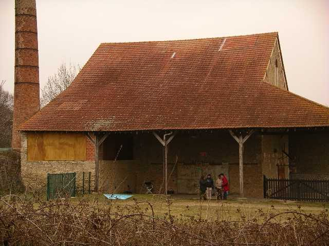
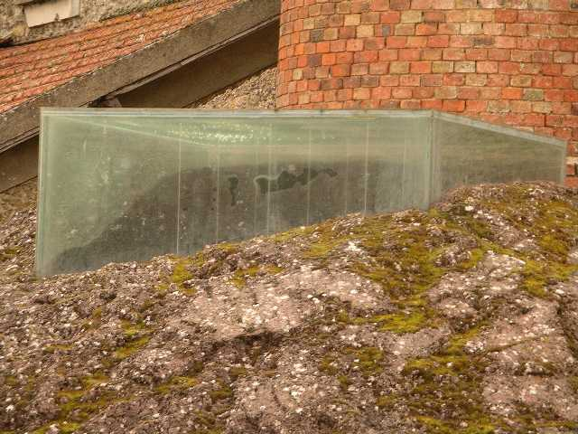
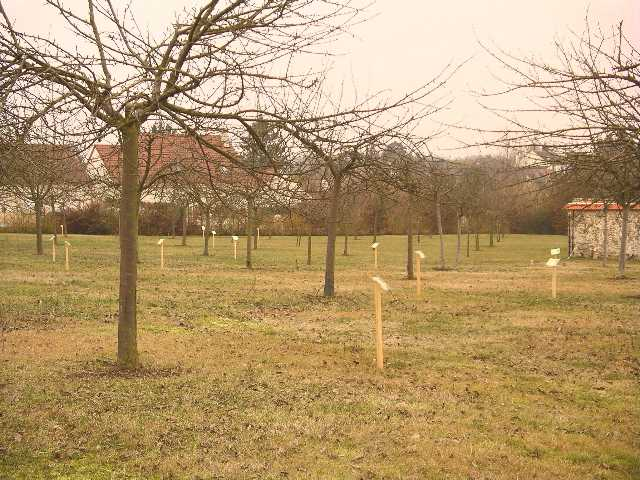
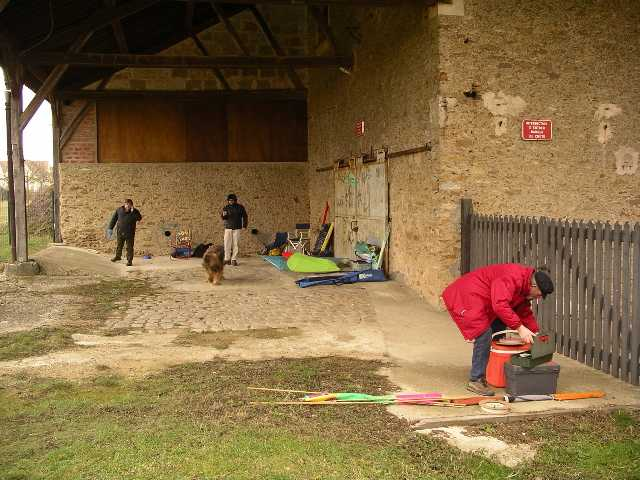
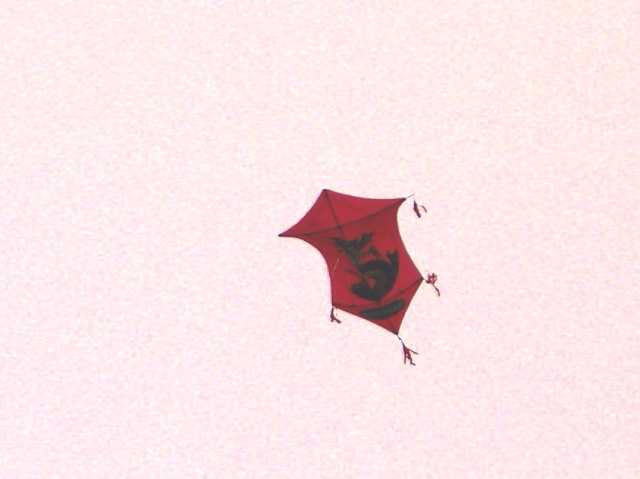
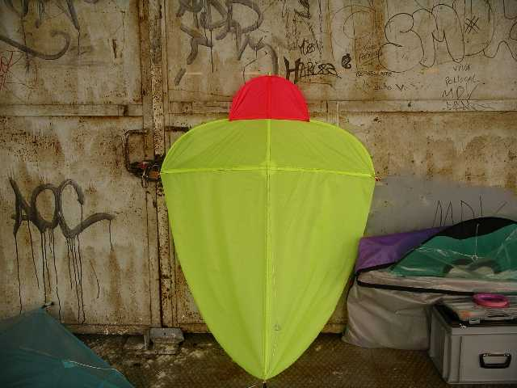
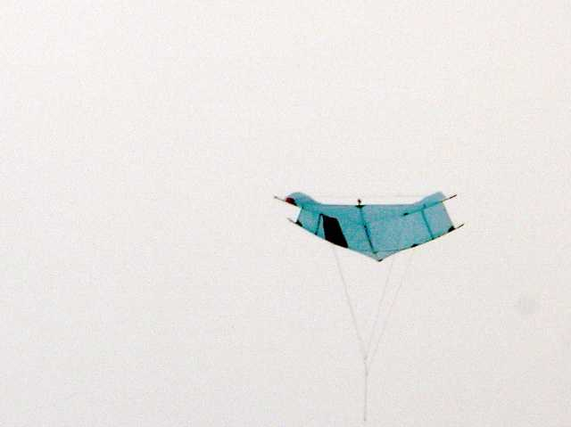
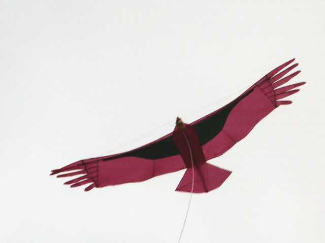
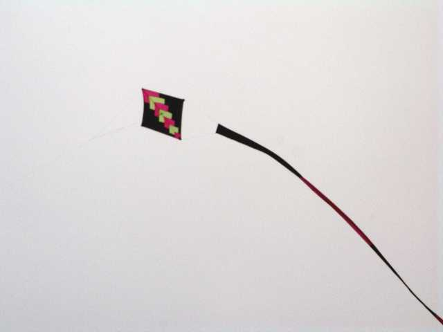

Savigny 2006

Rencontre modeste du CVCF Ile-de-France, à la magnifique ferme du Coulevrain, convertie en EcoMusée, et bien calme à cette époque.


Derrière la ferme, une mystérieuse usine agricole désaffectée dont l'auvent nous abritera du vent, éventuellement de la pluie, voire du soleil. Les 2 derniers, y en a pas eu, mais le vent largement assez pour la température montant vers -0,5° à 13 heures...


Au pied de la cheminée, une construction encore plus mal définie que l'usine, en verre et semi-enterrée. Probablement une espèce de séchoir qui récupérait la chaleur de la cheminée, mais pourquoi vitré et pourquoi enterré ? Si vous connaissez la solution, satisfaites ma curiosité ! (voir Note in fine).


Encore derrière, un champ de pommiers, tous étiquetés, sans doute un musée vivant de la pomme. J'ai noté par exemple la "Gros Locard", qu'on ne trouve pas dans tous les hypers !


Bon, revenons au cerf-volant. Il y aura une dizaine de participants dans la journée, par roulement. Difficile en effet de rester dehors plus de 5 h par cette température... De G à D : Eric, mon sac et Logos, Daniel Durieux, et Georges (Jojo, pour les intimes).


C'est Georges qui a monté le plus de cerfs-volants dont ce Rokkaku rouge à pompons, très chinois.


On a vu aussi les bannières CVCF/IdF réalisées, avec une 1/2 Tour Eiffel, etc. comme dans le Lucane. Et la coccinelle de 1 m prototype qui a bien volé, mais sera encore modifiée pour que l'arrière ne soit pas pointu en vol.


A midi, pique-nique sous l'auvent ! Vous avez déjà pique-niqué dehors par -0,5° ? On ne traîne pas à table, et Daniel remet son Rokkaku en l'air pour se remuer...


Moi, mon Albatros2, après avoir tenu toute la matinée, est rentré tout seul, une canne s'étant déboîtée en vol ce qui altère beaucoup les qualités... Alors je sors courageusement mon Condor, qui a toujours des plumes qui rebiquent...


Emmanuel a sorti des chats, comme d'habitude et ce carré à longue queue qui bougera quand même beaucoup dans les tourbillons de la ferme.

Finalement, ça a pas mal volé, mais on est parti tôt, laissant le terrain aux cygnes. Qu'ils en profitent, avant qu'un psychotique ne les fasse abattre en tant que vecteurs d'épidémie...
Note sur le "séchoir" : Selon les responsables de l'EcoMusée, "C'est une oeuvre d'art intitulée "un puits sans fin" de l'artiste Daniel Pontoreau et qui date de 1987. Le but du jeu est de monter sur le monticule de béton pour regarder dans le cube en verre: on est sensé y voir un puits sans fin...". L'usine est bien une distillerie qui faisait de l'alcool avec des betteraves.